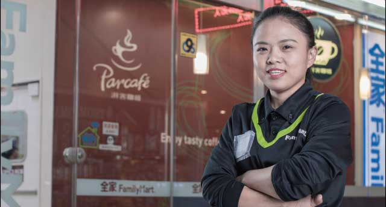

不服输
我们为春霞拍摄宣传照时，住在附近的一位老先生路过，主动上前说：“她生意这么好还要帮她做广告啊！这个小姑娘厉害的，全上海大概就她这家店生意最好。小丫头能吃苦。”确实，春霞走到今天，所承受的辛苦不是常人能想象的。2010年11月，春霞开始在全家兼职，次年4月转为正式员工。由于工作勤奋，还没来得及参加晋升考核，她就被委任带店，“干着店长的活、拿着员工的收入。”春霞笑道。在直营店工作两年后，担当认为她表现出色，就建议她加盟。“当时我看到其他同事转做加盟后，每月能赚一万多，我要求不高，一万元就心满意足了。”带着这样的想法，2013年1月，春霞成为了全家加盟业主。
春霞说自己最辛苦的时候就是刚加盟时，店里只有一个副店长，再带一个兼职，加上她一共就3人。又逢春节前夕，招人更困难，不得不从直营店借来2位同事做几个月的晚班，而大多数时候，春霞早晚班都要一力承担，她2、3天才回家睡上几小时，大部分时间都是趴在后场打个瞌睡，然后继续干活。
“申请加盟没多久就批下来了，主管让我选店，我索性就把曹杨路这家直营店给承接下来。这里租金和水电的费用都很高，刚开始日商根本不能覆盖（当时日商只有1.3-1.5万含税），前半年一直亏损。但是我完全没想过接其他店，想挑战下自己。”忙碌，对春霞来说已经司空见惯，再加上她从不服输的劲儿，半年后门店日商有了起色，每天猛涨5、6千，“一方面夏季是便利店的旺季，另一方面由于店面在当时的公司总部楼下，董事长经常会来关心我们，店里的报废原本由加盟者自己承担，后来董事长知道我的困难后，就帮助我承担了一部分的报废。”过了几个月，春霞觉得能扛下来，就跟公司说不需要承担报废了，“困难的时候拉我一把就行，不能让公司一直帮下去啊，太有压力了。”然而公司还是坚持补贴，直到总部搬走才取消。公司总部的搬家也招来不少闲言闲语，有人说春霞的店日商起码跌5千元，她不做过多的反驳，心里暗暗叫劲：“总部搬不搬走对我来说没有影响，我反而可以放开束缚、放开手脚去做。”用业绩来说话的春霞2016年把门店的日商提高了120%，在部门排名第一，最好的时候日商一天可达到4万。
倔脾气
春霞是家里三姐妹不受宠的老大。因为父亲不愿替她交200元的书本费，迫使她12岁便辍学。16岁离家打工后，有一次回去，父亲说给她2万元去念个中专学历，倔强的春霞说：“我已经不需要了。”被逼独立的春霞刚来上海时，曾经饿肚子三天，身上的钱只够吃一顿饭，在这样的窘境下，她都死撑着没有打电话回家要过一分钱。准备加盟前，春霞问父亲向别人借了3万，承诺给对方一年利息3千，又跟同事借了1万，并在承诺的时间内连本带利还给了同事，剩余的费用向公司贷款。等到加盟第二家环球港店时，她没有向公司贷款，一次性全额付清加盟费。
看春霞做事特别利索，很多事她都亲力亲为，遇到难题总是默默扛下来，用她自己的话就是“哪怕躲起来哭也不会说出来”。她管辖的两家店目前员工有9人，他们像家人般，工作上谁有难处大家都会伸出援手，融洽地打成一片，顾客进店都会有不同的氛围。“我以前眼睛里容不得沙子，黑白分明，现在学会了包容，我明白待员工也要像待顾客一样亲切。他们的执行力都很不错，大家都是朝着一个方向努力。”春霞的第六感特别强，对于单店某个商品是否能卖得好，她的嗅觉通常十分灵敏，“有时候哪些新品可以多备货，我会预测得到，所以我敢备货。顾客进来看到货架上商品多，会觉得我们这家店生意肯定很好。”
春霞的脾气虽然有点倔，但她不会和顾客起争执，“无论顾客怎么说我都不会顶撞。拿下环球港店的加盟权后，有段时间一直呆在那里，曹杨路门店的熟客就会问店员我去哪里了。”员工们跟着春霞都已经好多年，彼此脾气都已非常熟悉，有什么事就坦诚说，不会拐弯抹角。副店程艳是春霞的亲密合作伙伴，当年自己跑来应聘，也是种缘分。“我有时说话比较刻薄，不管你是什么来头，你怎么对我，我就怎么对你，我不会去讨好别人。招人一定要招合群的，在一起就要有团队精神，在我们店里是看不到很‘独’的人的。坦白说大家开心就做、不合就散，没有关系。”
有梦想
去年华东地区赈灾时，春霞买了5000元的物资捐给灾区。虽然她跟父亲的关系还是很紧张，加盟后第二年，她把赚到的钱给父母在老家盖了三层楼的房子，分批寄给家里近30万。“有能力了就给家里盖房子，也是想让他们过上好点的生活，自己也能安心。如果我的生活越来越好，而父母却仍然过得很差，我做不到。他们对我好不好是另一码事。我是希望自己的日子好了，有能力就去帮助父母和两个妹妹。”“有善心和孝心的孩子就不会变坏”，这是董事长经常挂在口上的一句话。说起董事长，春霞心里一直很感激这位爷爷：“爷爷对我很好，如果哪天我不做便利行业，会觉得对不起他。今天愿意接受采访，也是出于回报他。爷爷说我是中国最牛的店长，不惧怕任何高层。确实我不是做给任何领导看的，我是做给顾客看的。”
今年曹杨路门店的合约即将到期，我问春霞会不会续约？“我自问是否舍得放弃？这不是钱的问题，而是付诸了太多的感情在这里。我还没考虑好要不要续约，还是未知数。现在真的很累，各方面的压力很大。但我又是停不下来的，还想学习更多，或许去读书，但也不想完全放弃便利店。目前把事情做好就是了。当然人还是有梦想，也不可能一辈子只做一件事情。一辈子说白了也不长，应该要抓住实现自己梦想的机会。我没有读过多少书，希望自己有经济实力了就去帮助那些失学儿童。”
过自己想要的生活就是春霞的工作动力，只要店里不缺人，她就会放自己假独自出门旅行，曾经一个人跑去日本玩了8天、去台湾呆了9天。“家里人常说我很野，从小喜欢挑战一些新鲜的事，对外界充满好奇。在安徽老家时我就向往外面的世界。我不喜欢犹豫不决，以前也想过带爸妈一起玩，但是他们不认同我，不管我做什么都会反对。”而春霞对员工们说：“你们想做什么就去做，如果有更好的平台就去，没有关系。我跟经理开玩笑说，我们店里的人你挖不走的，钱出得再多也没用。但我希望他们过得更好。能够独当一面的员工我会给他们额外津贴，还有各种奖励。”除了回家睡觉或是旅行，其他时间春霞都扑在店里，她从来不看电视剧，有时间就看看新闻、看看书。“做这行想要有好成绩，不付出努力是不可能做好的，我不相信如果自己什么都不做就能有好业绩。”
没有谁比店长更了解一家店铺。环境不好时，不抱怨、不选择逃避而去积极面对；业绩好时，更要想方设法把好成绩维系下去。这就是春霞所描述的“压力”吧。春霞自嘲道：“一个小店长心思想这么远，别人可能会觉得这是个笑话。但是如果有一些更好的平台让我做到想做的事那就可以了。”永远不要小瞧任何人的梦想，何况是如此顽强不屈的春霞呢！